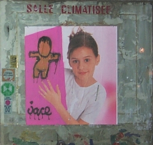

 Il m’arrive souvent de raconter ma vie sur ce site, et je vais recommencer aujourd’hui.
J’habite depuis peu à Paris dans le 20ᵉ arrondissement et je découvre le quartier. Cet arrondissement est décoré par de nombreux artistes urbains. L’affiche peinte de la photo ci-contre m’a interpellé. Il s’agit bien d’un gouzou de Jace !
Jace peint depuis 1992 des petits bonshommes sans visage un peu partout à la Réunion : les Gouzou.
L’originalité de ce personnage est qu’il sait toujours s’adapter au support qui reçoit sa peinture. Il vit beaucoup à la Réunion mais n’est apparemment pas une espèce endémique puisqu’il en apparaît à Paris et que la ville du Havre, dont Jace est originaire, en regorge. Stéphane Arlen m’a indiqué qu’il y en découvrait un nouveau toutes les semaines sur l’île mais certains comme le géant de la Ravine-Saint-Leu sont vraiment exceptionnels. Jace a son propre site en flash où les gouzou-spermatozoïdes tournent autour du menu (Le site a évolué depuis cet article, mais il y a toujours un site officiel des gouzou), mais il n’y a pas
beaucoup de Gouzou à découvrir et il faut lui préférer
la page de
Jace du site ARMVR.net (aujourd’hui disparue).
Pour connaitre un peu plus cet artiste zoreil, je vous propose une interview de Jace sur un site de culture Hip Hop.
Jace envoie aussi souvent ses détournements d’affiches sur unenuit.fr.st, (site aujourd’hui disparu)
Après avoir fait le tour de ces sites, allez aussi voir ma galerie de gouzou partout, vous pourrez voir plus d’une centaine de Gouzou de toutes tailles et couleurs et dans toutes les postures. Peaucoup de photos de la Réunion mais également du monde entier.
Vous pouvez aussi feuilleter Madakao, un des livres de Jace où on le voit dessiner des Gouzou sur des voiles.